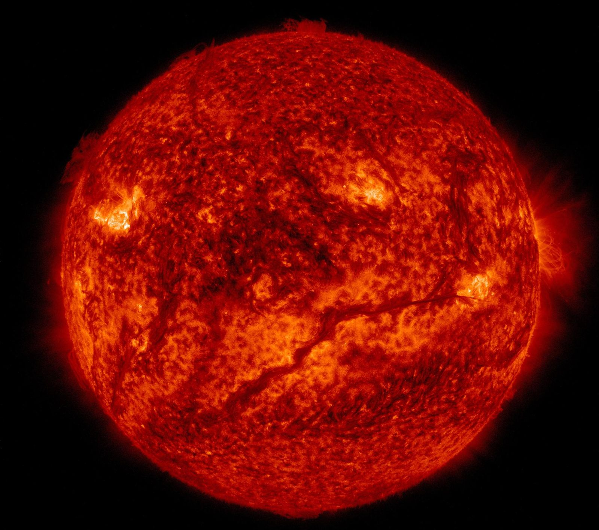
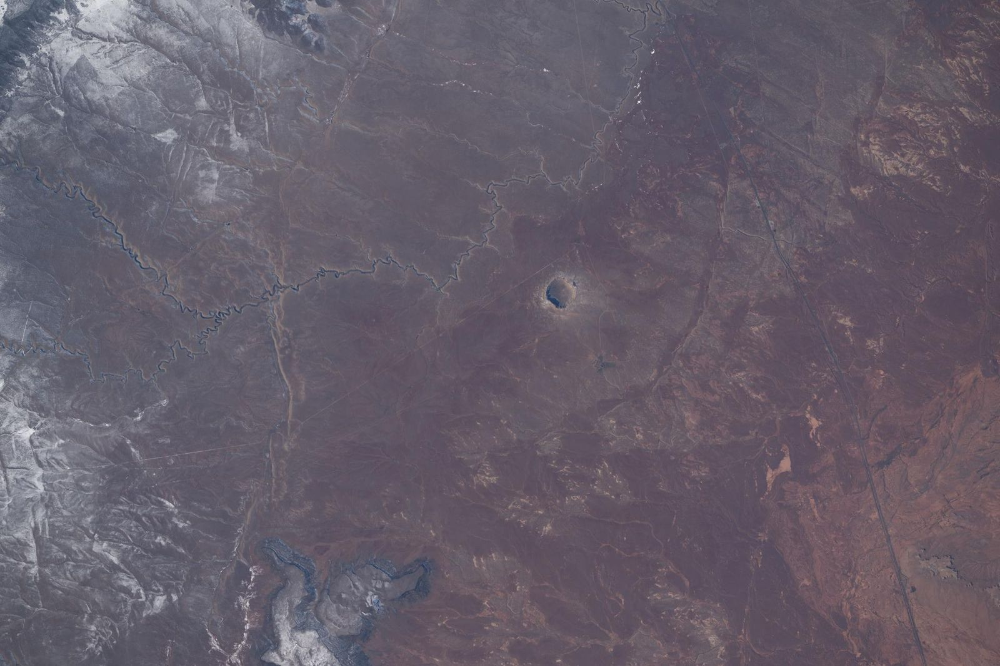

Part 1: Planet Earth · Chapter 2 of 15
How the Earth Was Formed
From a cloud of gas and dust to a rocky planet with air and oceans.

Everything around us, including our own bodies, is built from about a hundred chemical elements. The lightest, hydrogen and helium, were made soon after the universe began. Almost all the others were made later, inside stars.
A star like the Sun shines because of nuclear fusion in its core: hydrogen nuclei are squeezed together to make helium, releasing enormous energy. Bigger stars go further, building carbon, oxygen, silicon and iron. When they die, often in huge explosions, they scatter these elements into space, where they mix with gas clouds that will form the next generation of stars and planets.
The birth of the Solar System
About 4.6 billion years ago, one such cloud of gas and dust began to collapse under its own gravity. Most of the material fell to the centre, which grew hot and dense until fusion started: the Sun was born. The rest flattened into a spinning disc around it. Within the disc, dust grains stuck together into pebbles, then boulders, then bodies kilometres across, which collided and merged to form planets.
Close to the young Sun it was too hot for ice to survive, so the inner planets, Mercury, Venus, Earth and Mars, were built mainly from rock and metal. Farther out, ice and gas were plentiful, and the giant planets formed.
A violent beginning
The young Earth was hit again and again by leftover debris. One giant collision with a body about the size of Mars is thought to have thrown out the material that formed the Moon. Smaller impacts covered the surface with craters. On the Moon, with no weather and no moving plates, those craters are still visible. On Earth, erosion and plate movement have erased nearly all of them, though younger ones survive.

As the planet grew, heat from impacts and from radioactive elements melted much of it. Heavy iron sank to the centre to form the core, and lighter rock floated to the top. Gases released from the interior, together with water brought by impacts, were held by the Earth's gravity. They became the first atmosphere and, once the surface cooled, the oceans.
Key terms
- element
- A basic chemical substance that cannot be split into simpler substances. About a hundred are known, such as hydrogen, oxygen and iron.
- hydrogen
- The lightest element, a gas. Stars such as the Sun are made mostly of hydrogen.
- nuclear reaction
- A change in the centres of atoms that releases huge amounts of energy. In the Sun, nuclear reactions turn hydrogen into helium.
- solar system
- The Sun and everything that travels around it, including the eight planets.
- orbit
- The curved path that one object follows around another, such as the earth around the Sun.
- meteorite
- A piece of rock or metal from space that falls and reaches the ground.
- crater
- A bowl-shaped hollow made by an impact or by a volcano.
- atmosphere
- The layer of gases held around a planet by its gravity.
- gravity
- The force that pulls objects towards each other. Earth’s gravity holds the atmosphere and the oceans in place.
Check your understanding
Think of your answer, then open each question to compare.
Where were most elements heavier than helium made?
Inside stars, by nuclear fusion, and scattered into space when those stars died.
Why are the inner planets rocky?
Close to the young Sun it was too hot for ice, so they formed mainly from rock and metal.
Why does the Moon have many more visible craters than the Earth?
The Moon has no weather or moving plates, so its craters are not erased by erosion or plate movement.